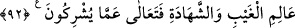

çalardı” üstün gelirdi. Her şeyin mülkiyet ve tasarrufu sadece birinin elinde olmazdı.
Allah ile beraber başka bir ilâh olduğu iddiâsı bâtıldır/geçersizdir. Akıllı kimse asla
böyle bir şey söylemez.
Kâşifî der ki: “Eğer Allah ile birlikte başka bir ilâh bulunsaydı, yaratılmışlara
kendisini tanrı yapar ve kendi mülkü ile O’nun mülkünü ayırırdı. Dünyadaki
hükümdarların durumlarından bilindiği şekliyle her zaman aralarında kavga ve savaş
olurdu. İcmâ ve istikrâ/hüküm çıkarma ile bu kavganın ve savaşın olmadığı mâlûm oldu.
Öyle ise O’nun şerîki yoktur.”
el-Es’iletü’l-mukhime’de der ki: “Ve mutlaka onlardan biri diğerine galebe
çalardı.” Yâni o iki ilâhtan güçlü olan zayıf olana gâlib gelirdi. Bu âyet, iki ilâh olsaydı
onlar arasında ilim ve kudret ile birbirine engel olmanın meydana geleceğine delildir.
Onlardan biri bir kimsenin yaşamasını, öbürü de yok olmasını istediğinde biri diğerinin
fiilini engelleme konusunda güçleri eşit olurdu. Onlardan hangisinin isteği üste çıkarsa,
kudretiyle diğerine gâlib olurdu. Bunun benzeri iki kişinin karşılıklı olarak ipi
çekmesidir. Güçleri eşit olduğunda ipe asılır dururlar. Birinin çekme gücü galip gelince
diğerinin fiilinden eser kalmaz. İşte âyetin mânâsı budur.
“Allah, onların (müşriklerin) yakıştırdıkları” onların Allah’ı evlâdı ve ortakları
olmakla vasfetmeleri ve O’na izâfe etmelerinden “şeylerden münezzehtir.” Siz onu
gereği gibi tenzih edin. Kâşifî der ki: “Allah Teâlâ pâktır, münezzehtir.”
Bahru’l-ulûm’da şöyle der: “Bu ifâde, tenzih veya hayret ettirme (ta‘cîb) içindir.”
92. Allah, gaybı da şehâdeti de bilendir. O, müşriklerin ortak koştukları şeylerden
çok yüce ve münezzehtir.
“Allah, gaybı da şehâdeti de” gizliyi de, aşikârı da “bilendir.”
et-Te’vîlâtü’n-Necmiyye’de der ki: “Mülkü, melekûtu, ruhları ve cesedleri bilendir.”
Gayb/gizli bize nisbetledir, Allah Teâlâ’ya nisbetle değildir. O, gaybı/gizliyi de
şehâdeti/âşikâr olanı da aynı şekilde bilir. Bu husus, bu konuda Allah Teâlâ’nın eşsiz
olması bakımından diğerlerinden ayrılmasına binâen O’nun ortağı olmadığına başka bir
delildir. Onun için âyetin devamı ona dayandırılarak “fâ” harfi ile getirilmiştir.
“O, müşriklerin” kendisine “ortak koştukları” gaybdan hiçbir şey bilmeyen ve
şehâdetle ilgisi bilgisi tam olmayan “şeylerden çok yüce ve münezzehtir.” Allah’ın bu
hususta eşsiz olması, ortağı olmaktan yüce olmasını gerektirir.
Râğıb der ki: “İnsanın dindeki şirki iki türlüdür:
1- Büyük şirk. Bu, Allah’ın şerîki/ortağı olduğunu ileri sürmektir ki en büyük
küfürdür.
2- Küçük şirk. Bu ise riyâ ve nifak gibi bazı işlerde Allah ile beraber başkasını da